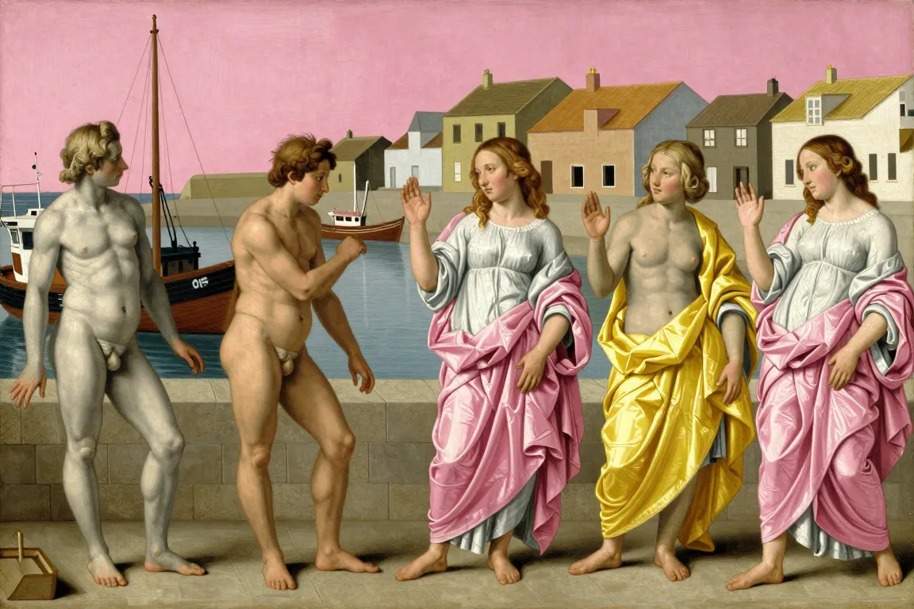

Avlange, vridde figurer i trangt, ustabilt rom, i syrlig farge. Malerne tok renessansens regler og bøyde dem med vilje: ynde og kunstferdighet erstatter rolig balanse.

Kjerneidé
Et bilde er vakrest når det viser dyktighet og oppfinnsomhet, så maleren strekker, vrir og presser det ideelle legemet forbi naturen.
Designprinsipper
Tegn figuren 9 til 10 hoder høy, med et lite hode og lange lemmer og hals.
Vri hver figur i en slangeformet linje (figura serpentinata) som spiraler opp gjennom 180° eller mer.
Fyll bildet til kantene med 5 til 15 figurer, og la intet rolig gulv være å stå på.
Vipp rommet: hev horisonten og skyv bakken opp i bildeplanet slik at figurene klatrer og stables.
Bruk syrlig, skiftende farge: en kald rosa, sitron, grønt og blått som skifter tone innenfor ett draperi (cangiante).
Lys figuren fra en kald, uklar kilde, og hold ansiktene glatte og emaljeaktige.
Legg hovedhandlingen til én side eller langt bak, og plasser en stor dekorativ figur foran.
Antimønstre
Rolig, symmetrisk balanse om en midtakse
Figurer med naturlige proporsjoner, 7 til 8 hoder høye
Klart, dypt perspektiv med et åpent gulv
Varm, jordfarget farge som holder seg til én tone i hvert draperi